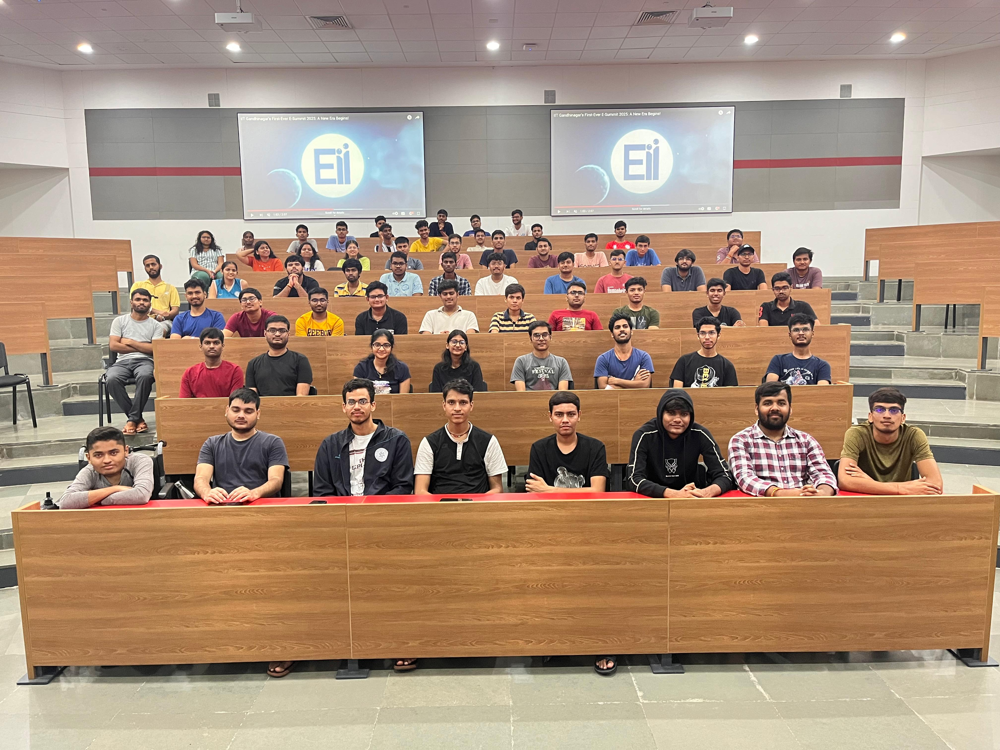

The Entrepreneurship Initiative (EII) at IIT Gandhinagar is a platform where students, innovators, and aspiring entrepreneurs come together to bring their ideas to life. My journey with EII has been a transformative experience, filled with challenges and rewards.
From Events Team to Tech Team
When I first joined EII, I was a part of the Events Team. In this role, I had the responsibility of organizing startup ideathons, workshops, and networking sessions. The experience was invaluable as it taught me the importance of teamwork, communication, and crisis management. It wasn’t always easy—there were moments of stress, long nights, and last-minute issues. But seeing everything come together, knowing we had created a meaningful experience for students and entrepreneurs, made it all worthwhile.
The Transition to the Tech Team
After gaining some experience with events, I decided to transition into the Tech Team, where I focused on building and maintaining the EII website and technical tools for event management. This shift from organizing to coding was both challenging and exciting. I learned a lot about web development, backend systems, and the importance of ensuring that the technical side of things runs smoothly during events. I also had to juggle between academic pressures and technical deadlines, but it was a rewarding experience that pushed me to grow professionally.
The Ups and Downs
My time with EII has been filled with both ups and downs. The highs were exhilarating—working with a passionate team, bringing ideas to life, and seeing the positive impact of our work. On the other hand, there were challenges, especially when things didn’t go according to plan. The key takeaway from all these experiences has been resilience. Learning to bounce back from failures and stay focused on the end goal was a crucial lesson.
The tech side had its own set of challenges—coding at odd hours, fixing last-minute bugs, and dealing with unexpected technical issues. However, the satisfaction of solving complex problems and delivering successful events was unmatched. Every glitch fixed, every system streamlined, felt like a small victory.
Conclusion
Being a part of the Entrepreneurship Initiative has been a life-changing experience. It gave me the opportunity to be part of a dynamic community of innovators and entrepreneurs. From organizing events to handling technical challenges, every step of the journey taught me valuable lessons in leadership, teamwork, and perseverance.
I look forward to continuing my journey with EII, learning from the challenges, and contributing to the growing ecosystem of entrepreneurship at IIT Gandhinagar.